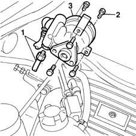
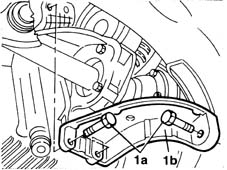
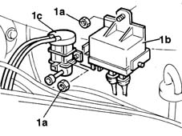
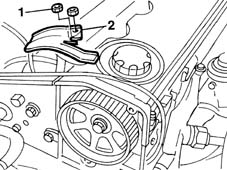
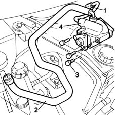

4130B21 power steering pump r r with interfering parts removed
- Path
- Procedures > 41 STEERING > 4130 POWER ASSISTED STEERING > 4130B power steering hydraulic sytem > 4130B21 power steering pump r r with interfering parts removed
- Kind
- repair procedure (removal / refitting; the operation number is the code)
- Applies to
- all engines; all production periods
- Interactive page
- https://sloeber94.github.io/elrnDB-fMltpl/en/#/2891692
Applies to: engines: 1.6 16v; all production periods
 Removing
Removing
 Refitting
Refitting1. Disconnect the two fluid supply and return pipes from the power assisted steering pump.
2. Undo the bolts fixing the power assisted steering pump to the supports.
3. Remove the power steering pump.

Applies to: engines: 1.6 16v; all production periods
Refitting
RemovingPosition the power assisted steering pump on the supp;orts.
Connect the two power assisted steering pump pipes.
Tighten the bolts fixing the power assisted steering pump to the front and rear support to torque.
 | Fastening | Component | Ø | Value (daNm) |
|---|---|---|---|---|
- | Bolt | POWER STEERING PUMP | M8 | 2.5 |
Applies to: engines: 1.9 JTD 8V; all production periods
Removing
Refitting1092C14 power steering pump/self levelling suspension pump pulley - r + r with belt removed
1048A10 AIR CLEANER FILTERING ELEMENT - REPLACE
1016A10 sound-proofing cover - r + r
1080D34 engine oil vapour separator - r + r
1044B10 fuel filter assembly - r + r or replace
Drain the power assisted steering fluid from the reservoir.
1. Undo the fixing bolts (1a) and remove the alternator rear mounting bracket (1b).

Applies to: engines: 1.9 JTD 8V; all production periods
1. Undo the fixing nuts (1a) and move the pre-heating control unit (1b) and the E.G.R. solenoid valve (1c) away from the working area.

Applies to: engines: 1.9 JTD 8V; all production periods
1. Unscrew the nuts.
2. Remove the power steering pipe mounting bracket.

Applies to: engines: 1.9 JTD 8V; all production periods
1. Undo the connector for the power steering pump supply pipe to the steering box.
2. Disconnect the supply pipe from the reservoir to the pump from the power assisted steering fluid reservoir.
3. Undo the bolts securing the power steering pump to its mounting.
4. Remove the power assisted steering pump well away from the area of the battery.

Applies to: engines: 1.9 JTD 8V; all production periods
Refitting
RemovingPositin the power assisted steering pump, placing it in the housing, working from the area of the battery.
Tighten the bolts fixing the power assisted steering pump to the support.
| Fastening | Component | Ø | Value (daNm) |
|---|---|---|---|---|
- | Bolt | POWER STEERING PUMP | M8 | 2.5 |
Connect the supply pipe from the reservoir to the pump to the power assisted steering fluid reservoir.
Tighten the connector for the supply pipe from the power assisted steering pump to the casing.
| Fastening | Component | Ø | Value (daNm) |
|---|---|---|---|---|
- | Ring nut | PIPE BTWN PUMP + POWER STEERING BOX | M16 | 3.5 |
| Fastening | Component | Ø | Value (daNm) |
|---|---|---|---|---|
- | Ring nut | PIPE BTWN PUMP + POWER STEERING BOX | M16 | 4 |
Fit the power steering pipe mounting bracket.
Fix the pre-heating control unit and the E.G.R. solenoid valve to the engine compartment bulkhead.
Tighten the bolts fixing the alternator rear mounting bracket.
| Fastening | Component | Ø | Value (daNm) |
|---|---|---|---|---|
- | Bolt | FRONT ALTERNATOR SUPPORT | M8 | 2.5 |
Drain the power assisted steering fluid from the reservoir.
1044B10 fuel filter assembly - r + r or replace
1080D34 engine oil vapour separator - r + r
1016A10 sound-proofing cover - r + r
1048A10 AIR CLEANER FILTERING ELEMENT - REPLACE
1092C14 power steering pump/self levelling suspension pump pulley - r + r with belt removed
Refill the power assisted steering system using appropriate fluid.
The power steering system is self-bleeding; to bleed, turn the steering wheel full lock left and right with the engine running and the car stationary.
After bleeding the air, check the level of the power steering fluid again and top up, as necessary.
Topics linked from this page (6)
- 1016A10 sound-proofing cover - r + r
- 1044B10 fuel filter assembly - r + r or replace
- 1048A10 AIR CLEANER FILTERING ELEMENT - REPLACE
- 1080D34 engine oil vapour separator - r + r
- 1092C14 power steering pump/self levelling suspension pump pulley - r + r with belt removed
- 5530B10 battery - r+r